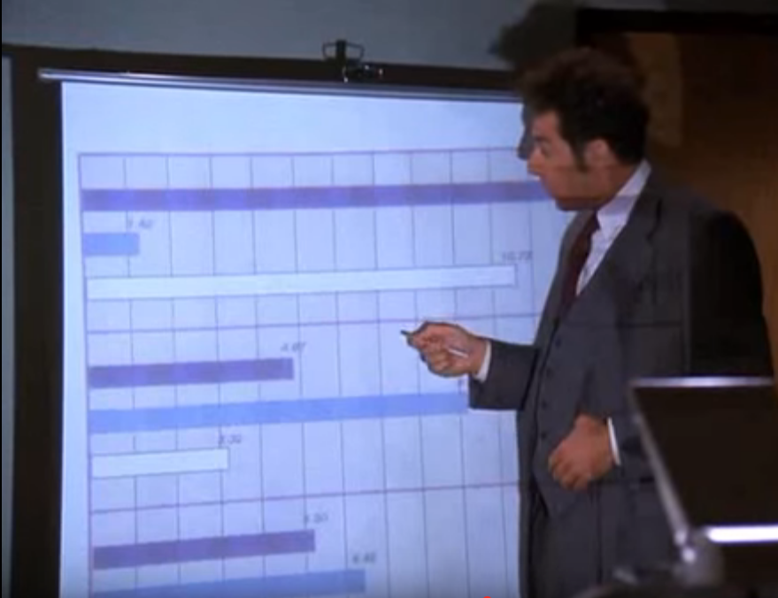

"Jerry, it's Frank Costanza! Mr. Steinbrenner's here, George is dead, call me back!"
Of all the great one-liners of the show, many of them come from outside the big four of Jerry, George, Elaine, and Kramer. The figure below shows how the show's already through-the-roof ratings are affected by the secondary characters in each episode.
